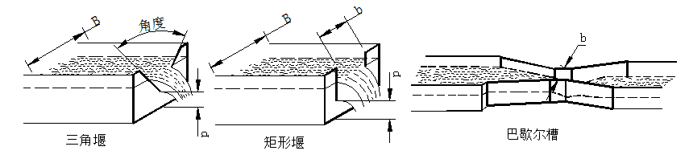
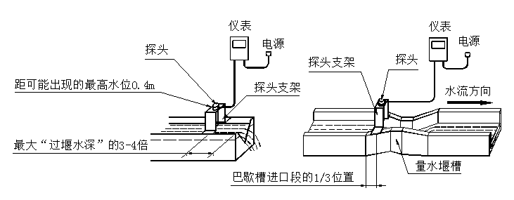

产品概述:
超声波明渠流量计是专门用于工矿企业、河流、农业用水中给、排水槽（堰）流量测量的智能式仪表。它采用超声波技术，非接触测量，因而测量结果及传感器本身不受被测介质特性的影响，寿命长，安装维护方便、可靠性高等优点，深受广大用户的欢迎。
超声波明渠流量计由超声波传感器（探头）、流量转换器、标准量水槽（堰）组成，流量转换器分为壁挂式和盘装式。可实时显示瞬时流量、累计流量、液位高度、累计工作时间、掉电时间等，适应于四种不同的标准槽（堰）的流量测量。并具有4~20mA模拟信号和RS485数字信号输出，以用于上位数据采集及异地显示联网。
技术指标:
| 流量测量范围 | 取决于所用标准槽（堰）类型 |
| 测量准确度 | ±3% |
| 使用环境温度 | 探头: －40℃~＋55℃ |
| 仪表: －10℃~＋40℃ | |
| 使用环境湿度 | ≤85％RH |
| 模拟信号输出 | 4 ~ 20mA DC |
| 最大负载能力600Ω. | |
| 串行通讯输出 | RS485 |
| 电源 | 220V AC±10％ |
| 功耗 | 8VA |
| 探头防护等级 | IP65（防水林） |
| 安装尺寸 | 240×210×107（壁挂），160×80×120（盘装） |
| 显示方式 | 2×20LCD背光中文显示 |
测量原理:
当被测介质全部通过流量槽(Parshall-巴歇尔槽，无喉道槽)或堰(直角三角形缺口薄壁堰、矩形缺口薄壁堰)形成自然流动时，其流量Q与流量槽上流水位H就有如下关系式：Q=K*Hn式中K、n为流量系数，对于不同规格的槽或堰(见附表)有不同的值，H是液位高度(m)。
气介质超声波液位传感器在微处理机系统的控制下，进行超声发射和接收，由超声波的传播时间T来计算传感器与液面之间的距离：h=(C*T)/2式中C为超声波在空气介质中传播速度(m/s)，设传感器至流量槽堰零液位时距离为hmax，则液位高度H=hmax-h。
常用的量水堰槽有，直角三角堰、矩形堰、巴歇尔槽和无喉道槽，如下图所示：
安装探头:
超声波明渠流量计的探头可以直接安装在量水堰槽水位观测点的上方。探头发声的一面要对准水面。可以用水平尺放在探头上盖上，通过校上盖水平使探头对准水面。巴歇尔槽和无喉道槽水位观测点在距喉道2/3收缩段长位置；三角堰、矩形堰在上游一侧，距堰板3~4倍最大过堰水深处。
探头安装方法：
安装探头时，要注意超声波的盲区。最高水面距离探头底面要大于0.4m 。
安装探头的探头支架，应在加工量水堰槽时做好。